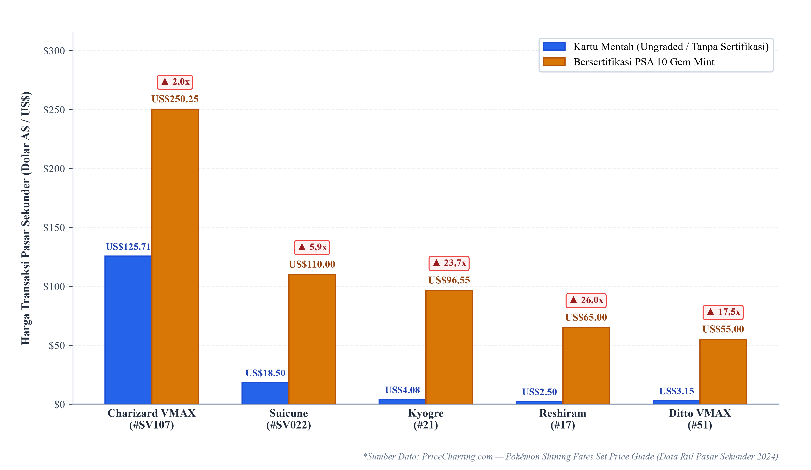

BAB 1 • Motif Spekulasi Pasar Sekunder
04 / 15

Gambar 1.3: Disparitas Harga Mentah (Raw) vs PSA 10 Gem Mint
Efek Multiplier 2,0x – 26,0x Lipat
Data PriceCharting membuktikan kartu dengan segel PSA 10 memiliki harga pasar berkali-kali lipat dibanding kartu mentah yang baru dibuka dari booster pack.
Standardisasi Fisik 4 Parameter
Lembaga grading (PSA, BGS, CGC) menguji kartu secara objektif dengan parameter baku:
Arbitrase & Financialization
Kartu Pokémon bukan lagi sekadar mainan, melainkan diperlakukan sebagai instrumen investasi alternatif yang likuid di pasar global.